倒计时开始
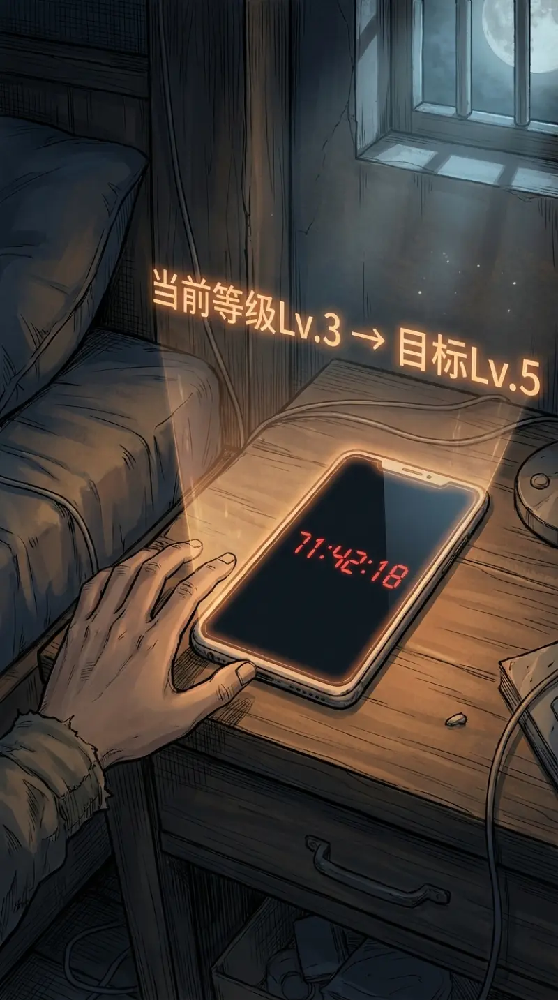
凌晨四点。不是闹钟叫醒我的，是系统——它在我梦里放了一个倒计时投影。我睁开眼，天花板上赫然浮着红色数字：71:42:18。做AI的时候，产品上线前72小时叫"death march"。没想到做厨子也有death march。区别是：那时候熬夜写代码，现在熬夜切菜。
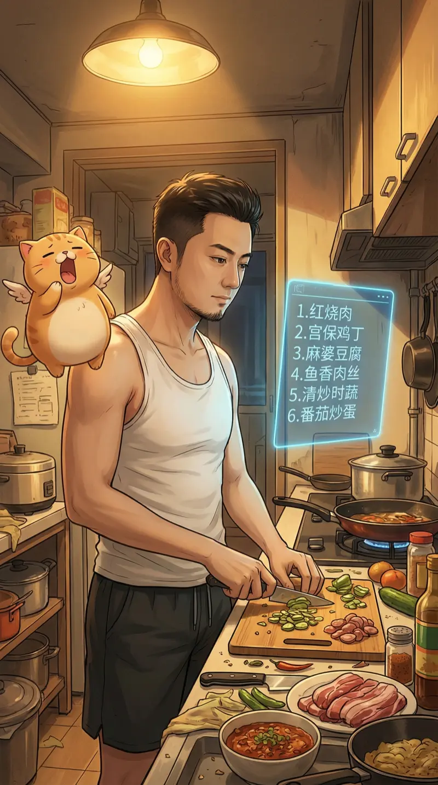
六道菜。系统列出了从Lv.3到Lv.5的最短路径——每升一级需要完成3个挑战，但有2个可以合并。最终：6道菜，每道一次过。失败任何一道，时间就不够了。
小鲜飘过来："你知道正常人从Lv.3到Lv.5要多久吗？"
"多久？"
"半年。"
"我有72小时。"
"所以我说你运气好——不是触发我运气好，是你脸皮够厚才叫运气好。"
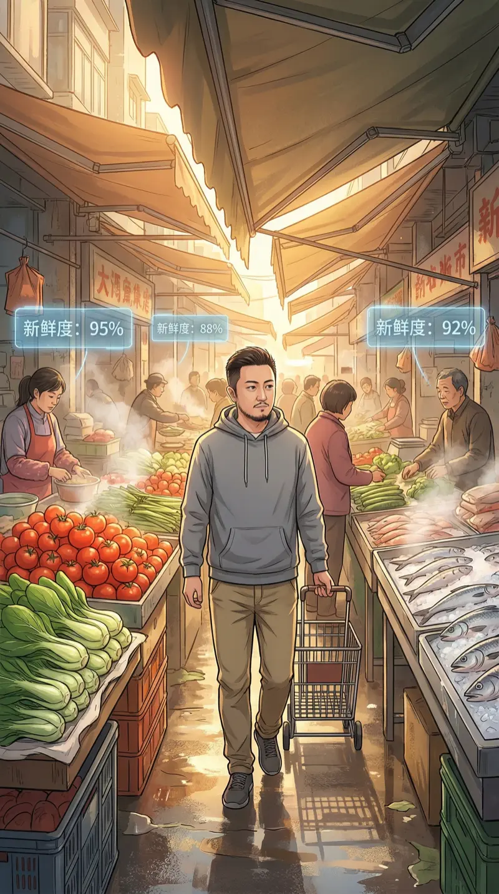
五点半，菜市场。我开着味觉透视逛菜市场的感觉，就像开了外挂打游戏——每样食材上都浮着属性面板。这条鱼：鲜度94%，最佳烹饪方式清蒸。那块豆腐：含水量偏高，适合做汤不适合煎。
卖菜的大叔看我推着小车狂装，问："开饭店的？"
"不，赶作业的。"
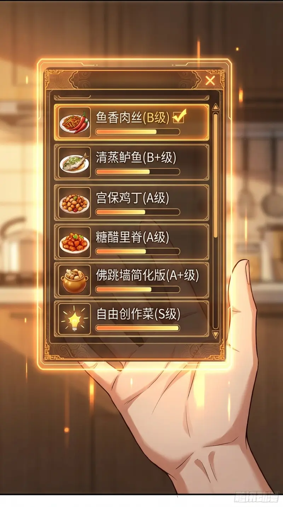
【系统任务】Lv.3→Lv.5 最短路径
① 鱼香肉丝(B级) ✅
② 清蒸鲈鱼(B+级)
③ 宫保鸡丁(A级)
④ 糖醋里脊(A级)
⑤ 佛跳墙简化版(A+级)
⑥ 自由创作菜(S级·考核专用)
六道菜的难度曲线，像创业融资的轮次——B轮还能靠产品，到A轮就要拼综合实力了。最后那道"自由创作"是S级，意味着不是照食谱做，而是要自己发明一道菜。从执行者到创造者。和写代码一模一样——Copy代码谁都会，写出原创架构才是真功夫。
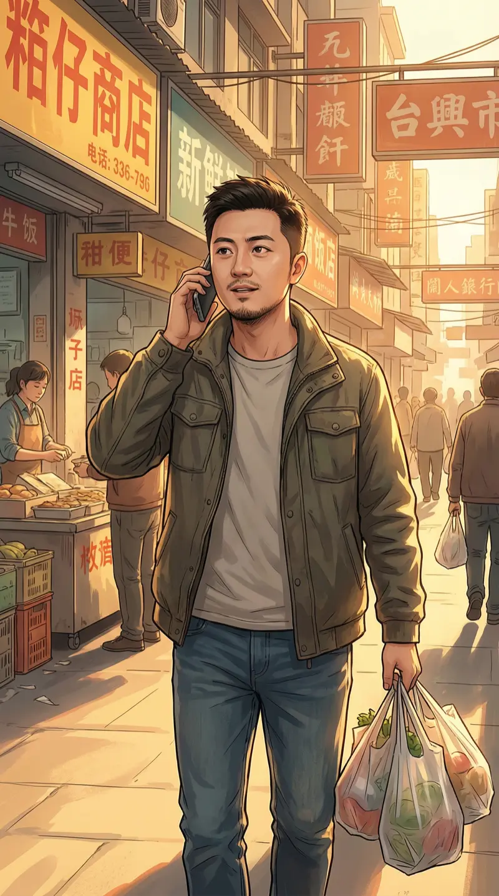
我给林小鱼打了个电话。
"小鱼，我需要72小时闭关。摊子你能帮我看着吗？"
"你闭关做什么？"
"升级。考许可证。"
"你才做了三天饭——"
"两天半。"
"两天半就去考许可证？你当这是考驾照啊？"
"驾照我也是突击三天考的。"
"……你当时挂了几次？"
"这不重要。重要的是最后一次过了。"
极限升级
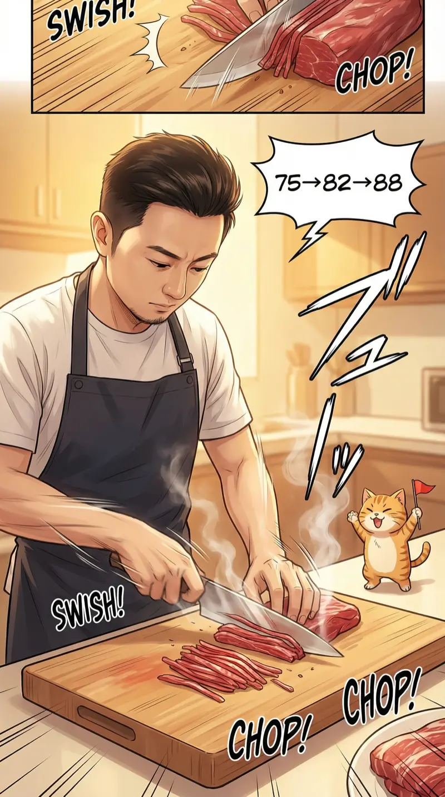
第一道：鱼香肉丝。关键技术点——肉丝必须粗细一致，误差不超过1mm。我的手在发抖。第一刀歪了。第二刀还是歪了。第三十刀——手突然稳了。
【刀工技能升级！精确度+40%】
评分：88分 ✅ 通过 | 用时47分钟 | 剩余70h15m
第二道：清蒸鲈鱼。这道菜的难点不在调味——在于"什么都不加"。清蒸是减法，把鱼本身的鲜味释放到极致。味觉透视告诉我：这条鱼的最佳蒸制时间是7分42秒，误差不超过10秒。多一秒老，少一秒生。
我盯着计时器，像盯着服务器的响应时间。7分42秒。掀盖。鱼肉雪白如玉，筷子一夹就散。
【91分！】小鲜难得夸了一句："还行。"
从它嘴里听到"还行"，等于别人说"太棒了"。
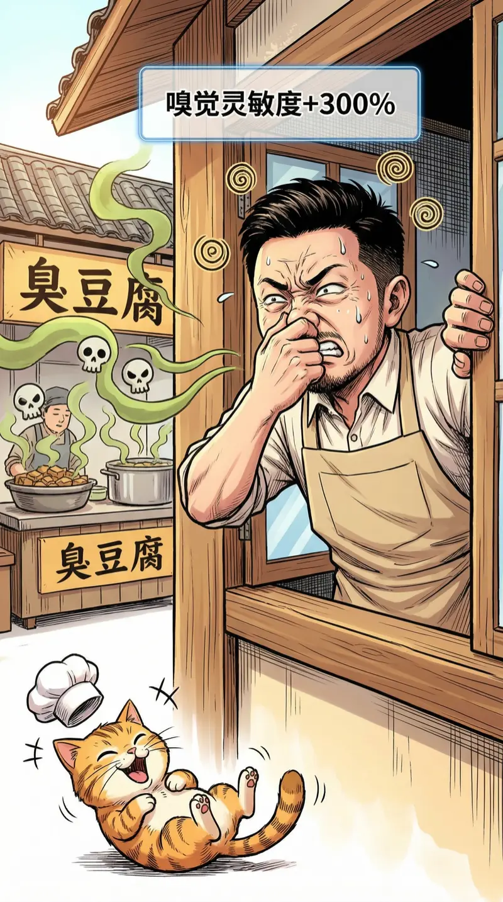
第三道做到一半，系统突然弹窗：【味觉透视升级中……嗅觉灵敏度+300%】
我还没反应过来，一股味道直冲天灵盖——隔壁老张在炸臭豆腐。正常情况下，那个味道就是"有点臭"。嗅觉提升300%之后——那是生化武器。
我趴在窗台上干呕了三十秒，小鲜在旁边笑得厨师帽都歪了："这就是成长的代价！"
我觉得这是系统在整我。
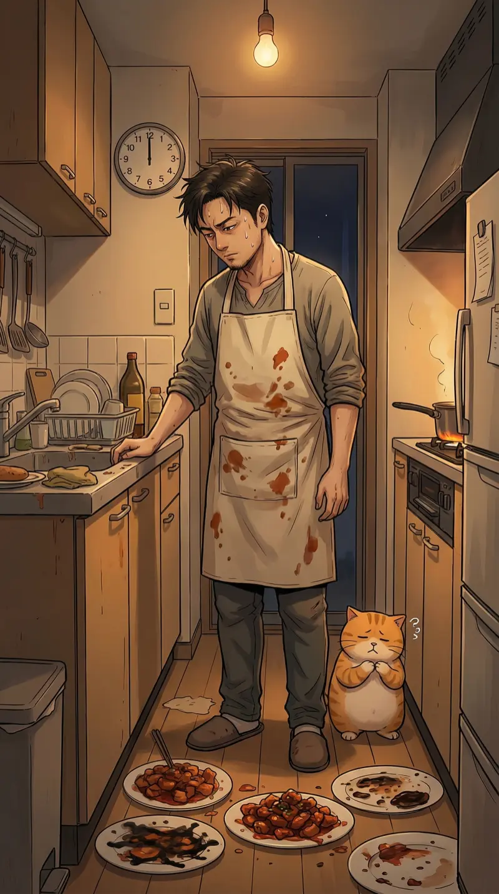
凌晨两点。邻居敲墙了。糖醋里脊的挂糊环节让我卡了四个小时——糊太厚口感面，太薄挂不住。我已经失败了六次。地上的失败品堆成小山。
小鲜叹气："你做AI的时候也这么轴吗？"
"不，做AI的时候比这轴。"
"难怪你创业三年才倒闭。"
"没倒闭，是战略性撤退。"
"哦，换个说法就不是失败了？"
"对，就像这不是烧糊了，是'焦化实验'。"
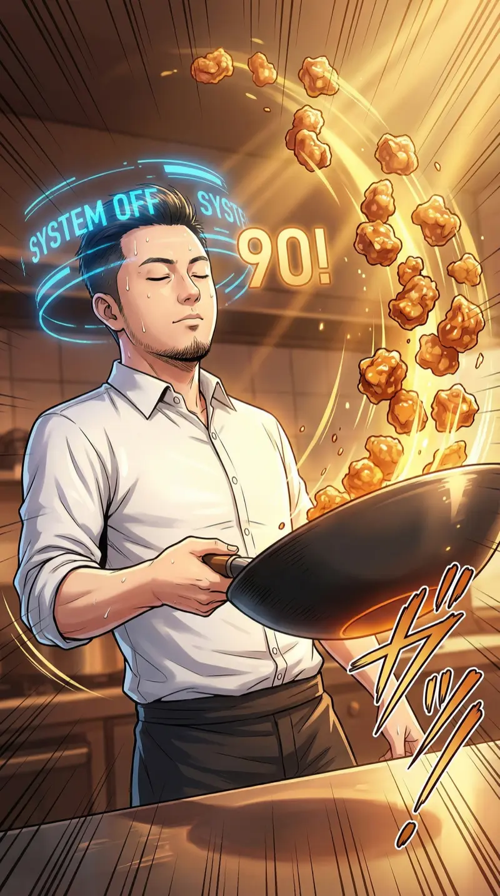
第七次。我关掉了系统界面。不看数据了。做AI的时候我学到一件事——当你被数据绑架，就失去了直觉。数据是工具，不是主人。
我闭上眼，凭手感翻锅。油温、挂糊的厚度、翻转的角度——全靠身体记忆。我听到糊裂开的声音，闻到醋和糖焦化的香气。睁眼。
【90分！】有时候，放下执念反而突破了。创业也是，做菜也是。
还剩36小时，进度落后
B. 跳过佛跳墙，直接冲自由创作——赌一把大的
C. 找王厨求助速成指导
A. 按顺序——基础不牢地动山摇。压缩时间但不跳过环节。
我做AI时就说过"捷径通向的都是悬崖"。可以优化时间分配，但不能跳过任何一步。创业者的纪律性。
另一个战场
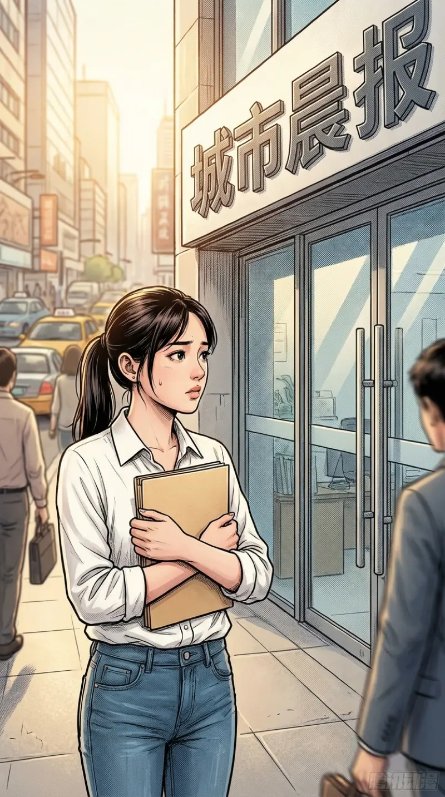
我不知道的是，小鱼没有只帮我看摊。她拿着美食街二十年的经营记录、摊贩们的故事、还有赵总名下公司的工商信息，找到了本地报社。
她说她在网上查了一整夜。
"姐，你一个卖馄饨的，怎么会查工商信息？"
"我卖馄饨，不代表我只会卖馄饨。"
后来我才知道——这个女孩高中学历，但自学了法律援助的基本流程。她一直在用自己的方式保护这条街。
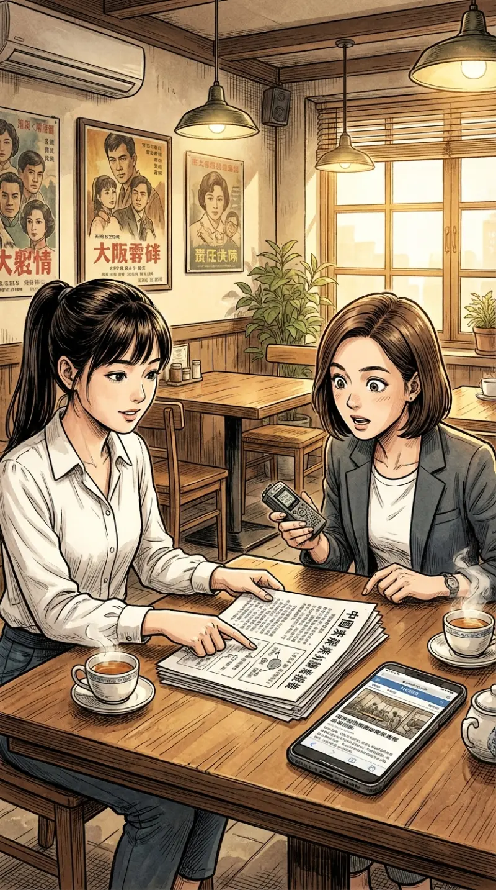
记者叫小周，刚入行两年，专跑民生线。小鱼把材料铺开："赵总的'赵氏餐饮'去年有三起食品安全投诉，都被压下去了。他要拆美食街建连锁美食城，但规划许可还没批——他是先举报、先赶人，造成既定事实。"
小周翻着材料，眼睛越来越亮。这就是新闻。
而小鱼用她的方式，在另一个战场开了一枪。
佛跳墙之战
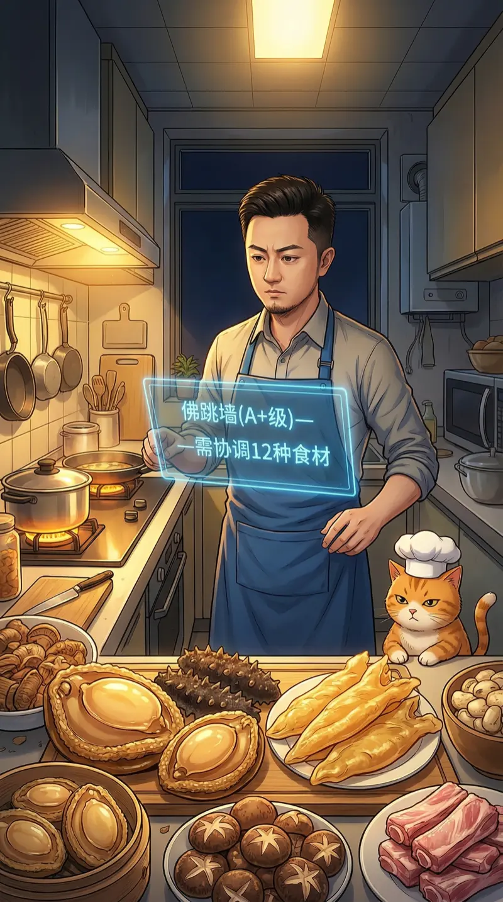
佛跳墙。十二种食材，十二种火候，十二种时间线——同时管理。这不是做菜，这是项目管理。
我在AI公司管过十二个人的团队，没有一个人让我这么头疼过。因为人可以沟通，食材不会跟你说"我快焦了"。
小鲜飘在旁边，难得严肃："这道菜，我建议你认真对待。"
"我哪道菜不认真？"
"之前那些是考试，这道是面试。过不了这关，后面的自由创作你连锅都不配摸。"
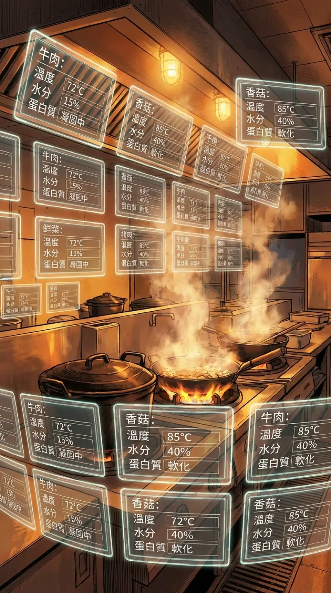
我深呼一口气，同时启动味觉透视和系统辅助。视野里瞬间变成了NASA控制室——十二个食材状态面板同时在线，温度、含水量、蛋白质变性程度……实时更新。
信息量巨大。但这不就是我最擅长的事吗？同时处理多条数据流，在噪声中找到信号。我是程序员出身。多线程并发？这是我的主场。
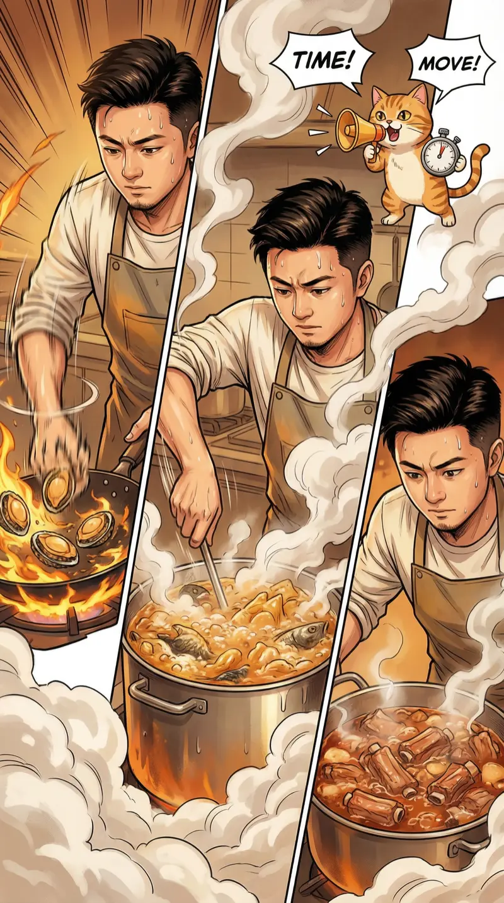
三个灶台同时开火。我像陀螺一样在它们之间转——左手翻鲍鱼，右手搅花胶，脚还得踢一下炖排骨的砂锅底座防止溢出。
小鲜变成了我的项目经理，在旁边喊倒计时："排骨三分钟！鲍鱼一分半！花胶该关火了！"
就像当年我的CTO在上线前喊："前端ready了吗？后端呢？数据库migration跑完没？"一模一样的混乱。一模一样的刺激。
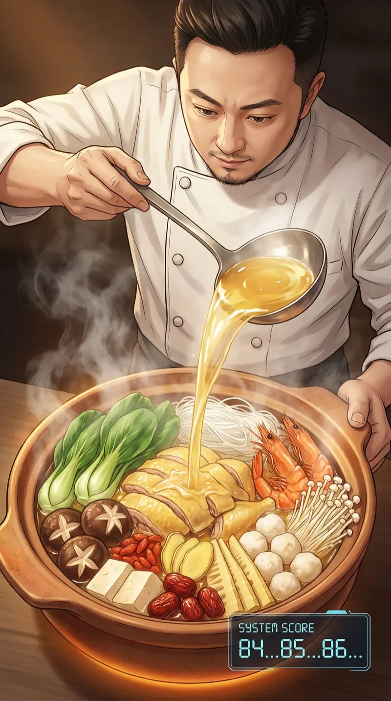
最后一步：所有食材按顺序入坛，倒入鸡汤，密封。系统评分随着每种食材入坛跳动：78…80…82…84…85…86……每跳一下我的心跳一下。
最后一勺鸡汤倒进去。密封。等待。
【最终融合中……预计等待：45分钟。期间不可开盖。】
四十五分钟。我做过最长的等待是等服务器部署——那次等了一小时，结果502。希望这次不是502。
等待佛跳墙的45分钟里，做什么？
B. 休息——72小时几乎没睡，需要恢复体力
C. 打电话问林小鱼摊位情况
A. 构思自由创作菜——利用等待时间思考，不浪费一分钟。
我是极致的时间利用者。创业者不会让任何空隙浪费。"等部署的时候写文档"是我的习惯。
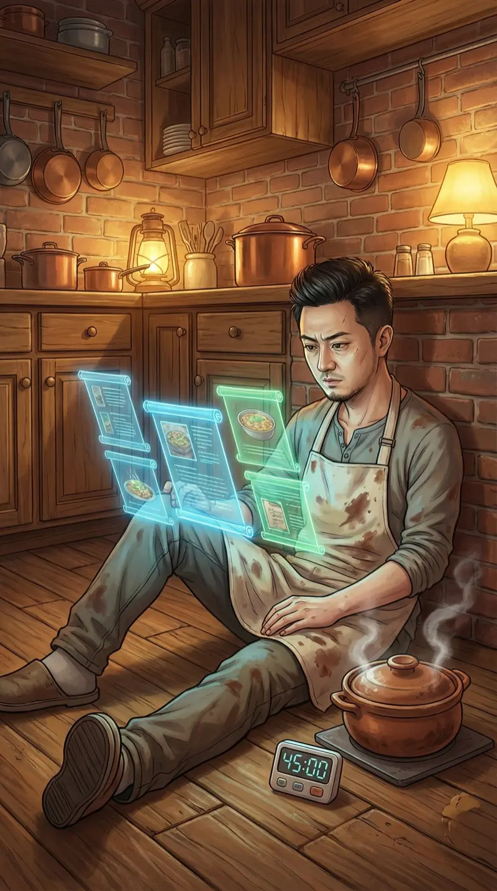
我靠着墙坐下来。腿已经站了快二十个小时，膝盖在抗议。但脑子停不下来——最后的自由创作，S级，要发明一道菜。系统没有给食谱，因为这道菜还不存在。
我翻遍了已解锁的食谱，找规律。鱼香肉丝的核心是"鱼香"——没有鱼的鱼味。清蒸鲈鱼的核心是"减法"。糖醋里脊是"反差"——酸甜交织。黄金蛋炒饭是"简单的极致"。
那，有没有一道菜，能同时包含所有这些原则？
四十五分钟。掀盖。蒸汽带着十二种食材融合后的香气直冲屋顶——我的嗅觉灵敏度还开着，差点又被自己的菜熏晕。但这次是好的熏——鲍鱼的鲜、排骨的醇、花胶的滑……所有味道织在一起，像一首交响乐。
【92分！恭喜，Lv.4→Lv.5达成！】
我差点哭了。不是因为感动——是因为太累了，而且终于不用再做第六道以外的菜了。
区级考核
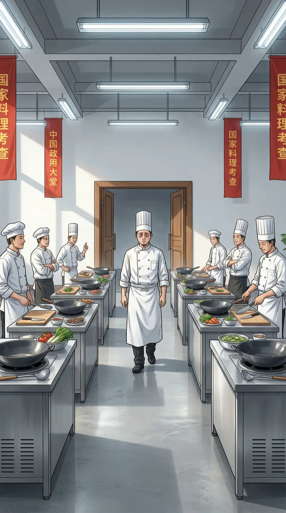
考核日。距离deadline还剩8小时。区行政中心的多功能厅，十个灶台一字排开。其他考生看起来都很正常——精神饱满，准备充分。只有我顶着两个黑眼圈，穿着一件借来的、大了一号的厨师服，像一个误入厨艺界的程序员。
因为我就是。
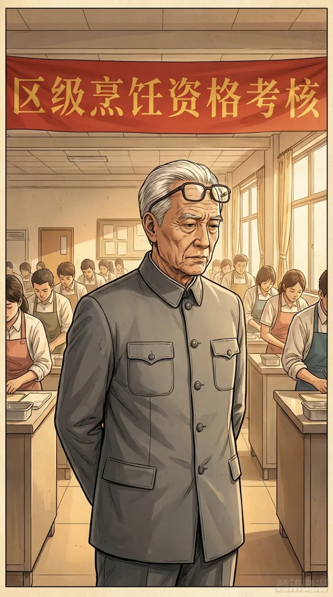
主考官姓周，退休国宴厨师。六十五岁，白发梳得一丝不苟，穿灰色中山装。他不穿厨师服——因为他的级别已经不需要用服装证明身份了。
他扫了一眼全场，目光在我身上停了半秒多——大概是因为我的黑眼圈太像熊猫了。
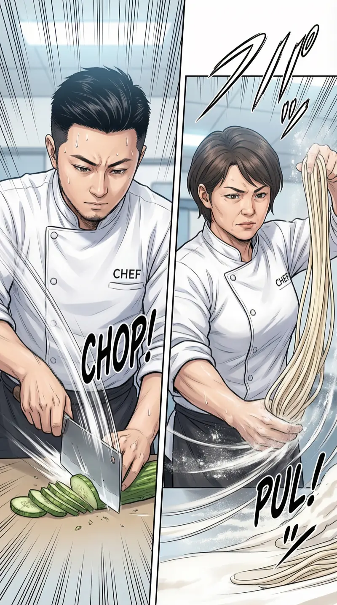
第一轮：基本功。切丝、切片、切丁，限时五分钟。系统的刀工加成让我的手稳得像机器——每一刀的误差不超过0.5mm。
周师傅走过来，低头看我的刀工，没说话。旁边的陈姐在拉面，那动作——十五年的功力，柔韧自如。她看了我一眼：
"小伙子，你这刀工是跟谁学的？"
"自学。"
"多久了？"
"三天。"
她的面差点飞出去。
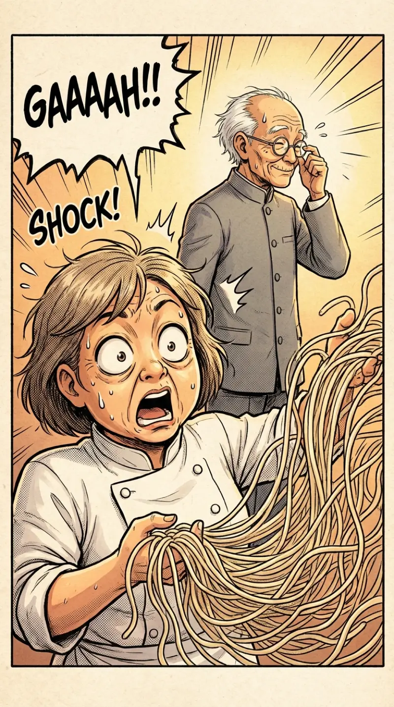
"三天？"陈姐的声音大得整个考场都听到了。"三天学刀工学成这样？你是天才还是骗子？"
"介于两者之间。"
"你之前干什么的？"
"做AI的。"
"做……爱？"
"AI！人工智能！"
"哦，那更不正常了。写代码的手怎么可能切菜切这么好？"
"也许因为我debug的时候经常砍键盘。"
周师傅在后面轻轻咳了一声。不知道是在提醒我们安静，还是在忍笑。
第二轮现场拿手菜，朱江选什么？
B. 佛跳墙——用最难的菜展示最高水平
C. 自由创作——提前亮出S级实力
A. 黄金蛋炒饭——从Lv.1陪我到现在的"起点菜"。把最简单的做到最好。
不炫技。用最简单的菜打最硬的仗。好产品不需要花里胡哨，把核心做到极致。蛋炒饭是我的MVP。
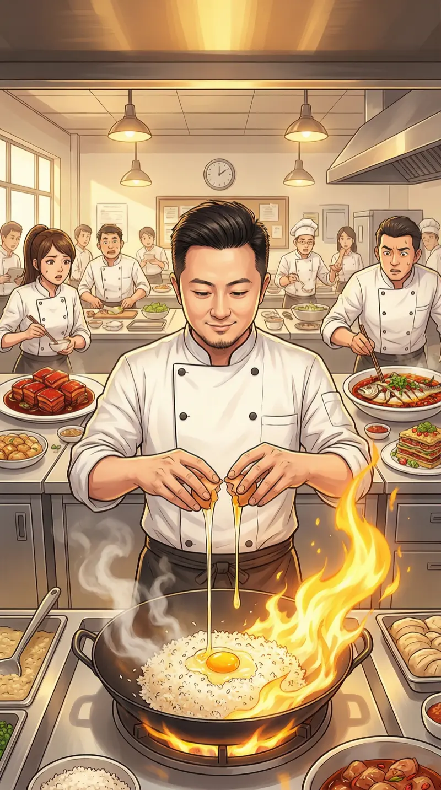
所有人都在做硬菜。红烧肉、水煮鱼、糖醋排骨——恨不得把十八般武艺全亮出来。只有我起了个锅，打了三个蛋，下了一碗冷饭。
整个考场的目光都飘过来了。我听到有人小声说："这哥们是来搞笑的吧？"
不，我是来赢的。用一碗蛋炒饭赢。这道菜，从Lv.1到Lv.5陪了我72小时。它不是最难的菜，但它是我的起点。
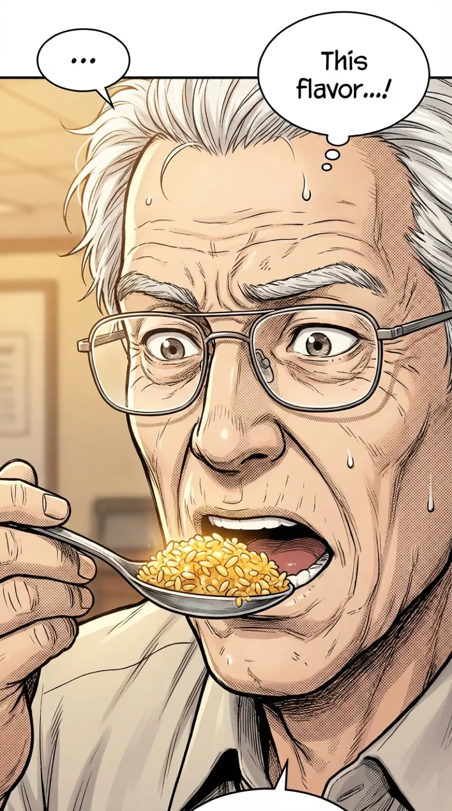
周师傅没说话。他用勺子舀了一口，放进嘴里。嚼了两下——停了。和王厨一样的反应：吞了。他放下勺子，看着我。
"三天？"
"三天。"
"你之前真的没碰过锅？"
"我烧过开水算吗？"
他没笑。"你这碗蛋炒饭，技术上有几个瑕疵。但有一样东西是技术给不了的。"
"什么？"
"诚意。米是好米，蛋是好蛋，火候是真心伺候过的火候。这碗饭没有一样是凑合的。"
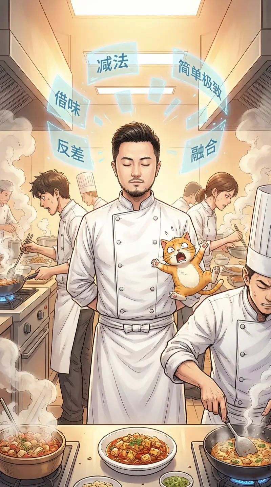
最后一轮：自由创作。发明一道菜。其他考生动作很快，看得出是准备了很久的得意之作。我站在灶台前闭着眼。
小鲜在旁边急了："你在干嘛？！时间在走！"
"我在想。"
"想什么？！"
"一道把所有我学到的东西融在一起的菜。"
鱼香的'借味'、清蒸的'减法'、糖醋的'反差'、蛋炒饭的'简单极致'、佛跳墙的'融合'——如果有一道菜能同时实现这五个原则……
"五味归一汤"——我给它起了这个名字。五种最普通的食材，每种只用一点，但每一种都按它最合适的方式处理。
鸡蛋打散成蛋花——"简单极致"。豆腐切薄片——"减法"。菌菇借虾仁的鲜——"借味"。酸笋提味——"反差"。最后一勺高汤融合所有味道——"融合"。
五道菜的哲学，一碗汤里全说完了。做AI的时候，最好的产品不是功能最多的，是把核心体验做到极致的。这碗汤，就是我的MVP。
周师傅端起碗。喝了一口。放下。沉默。
我以为完了——沉默通常不是好兆头。但他又端起碗，喝了第二口。考核规则里，主考官只需尝一口就够了。喝第二口，意味着他不是在评分——是在享受。
"这道菜叫什么？"
"五味归一汤。"
"谁教你的？"
"没人教。我自己想的。"
"你做了三天菜，自创了一道汤，还起了个哲学味道的名字。"他摘下老花镜擦了擦。
"通过了。"
许可证到手
走出行政中心的时候，阳光刺得我眯了眼。手里是热乎的——区级食品经营许可证。72小时。从Lv.3到Lv.5。从不会做菜到通过国宴厨师的考核。
我觉得这比拿到融资还爽。因为融资是别人认可你的PPT，而这个证——是我用双手做出来的。
小鱼在门外等我。她手里拿着一份当天的报纸。
小鱼的报纸登了赵总的负面新闻
B. "太冒险了，万一赵总报复你怎么办"
C. "有了这个新闻，也许不用参加大赛了"
A. "干得漂亮，但这只是拖延。真正让他放弃的方式，还是在大赛上赢。"
我认可队友的行动但不依赖外力。骨子里相信"只有产品力是真护城河"。新闻是辅助手段，大赛才是正面战场。
报纸头条：赵氏餐饮被曝三起食品安全投诉和违规举报。小鱼干的。
"你什么时候变成调查记者了？"
"卖馄饨的时候什么人都能碰到，包括记者。"
"你比我想的厉害多了。"
"那当然。你以为保护这条街只有你一个人在做？"
我笑了。创业最难的不是一个人打仗——是发现身边的人其实一直在并肩战斗，只是你没注意到。
手机震了。一条陌生号码发来的短信：
"朱先生，许可证只是入场券。厨艺大赛的评委名单我已经打过招呼了。——赵。"
【S级威胁！厨艺大赛评委阵容异常——3名评委与赵氏餐饮存在商业关联。建议：14天内将技能提升至Lv.8以上，以绝对实力碾压所有暗箱操作。Lv.8解锁条件：完成"食材共鸣"觉醒。】
绝对实力碾压暗箱操作。
这句话——就是我做AI时学到的最重要的一课。当市场不公平的时候，唯一的办法就是强到让不公平变得无所谓。
14天。从Lv.5到Lv.8。又一个不可能的deadline。
但我刚从上一个不可能里活过来。